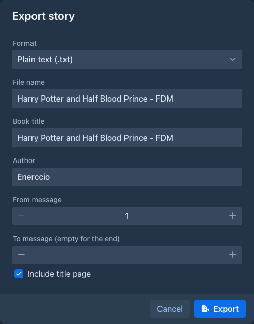
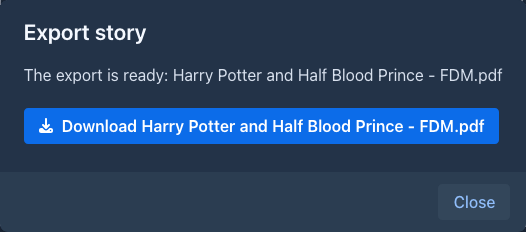

Exporting a book
Export turns the story into a file you can read, print, send or publish elsewhere. Unlike a backup it contains only the text, as a finished book.
Only the active branch is exported - the same parts the story editor shows. To export another version of the story, switch to that branch first.
Exporting
-
Open the book and go to the Story tab.
-
Open the settings menu (⚙) in the bottom bar and choose Export story.
-
Fill in the dialog and choose Export.
-
Marginalia collects the parts of the branch and writes the file, which takes a moment for a long book. A progress bar shows how far it is.
-
When the file is ready, a dialog offers it for download. Choose the Download button to save it.


Formats
The text of the parts is Markdown. Emphasis, headings, quotes, lists, code blocks and scene breaks (---) are kept in
every format that can show them. Raw HTML in the text is shown as text, never run.
Images of the parts are placed after the text of their part, with their captions:
Table of contents
When the text contains chapters, the file gets a table of contents after the title page. A chapter is a part of the
story that contains a Markdown heading (a line starting with #, e.g. # Chapter 3: The Harbour) - the same rule the
Chapter Marker plugin uses in the story sidebar. The first heading of a part is its title, parts
without a heading belong to the chapter before them. A story without any heading has no table of contents.
In PDF, Word and EPUB every chapter starts on a new page. The title page and the table of contents are pages of their own as well.
The entries are links to the chapters:
Page numbers
The PDF and Word files have the page number in the footer of every page except the title page. The number is the position of the page in the file, so the title page is page 1 and the first page after it is page 2. The other formats have no pages of their own.
The title page
With Include title page, the file starts with the book title and the author on a page of their own. The page is
made from a built-in template (DEFAULT_EXPORT_HEADER_TEMPLATE), which isn't editable in the application yet.
Good to know
-
The export is a snapshot of the branch when you choose Export. Parts generated or edited afterwards are not in the file.
-
The exported file is kept only until you close the download dialog. Export again if you need it later.
-
Summaries, lorebooks, instructions and the model's reasoning are not exported, only the text and the images of the parts. To save all of it, make a backup.